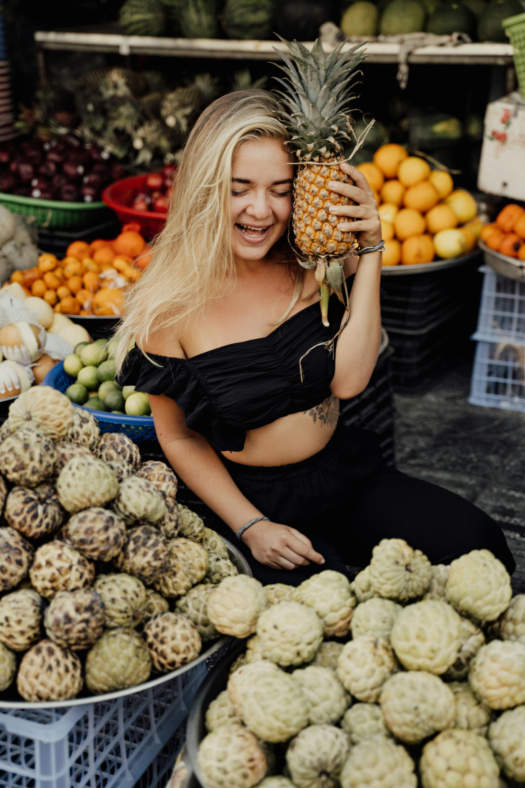

Visiting the lantern festival in Xitun last year was a magical experience. The lights and atmosphere were unforgettable.

Planning your journey carefully can help you avoid stress and enjoy your trip to the fullest. Make a checklist and stay organized!